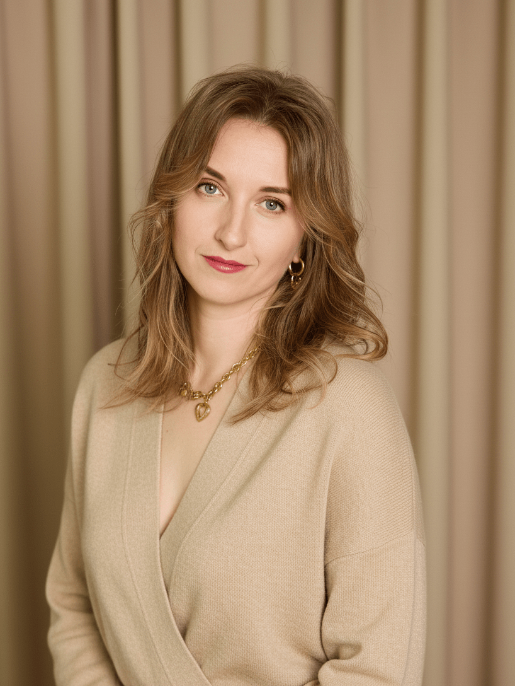
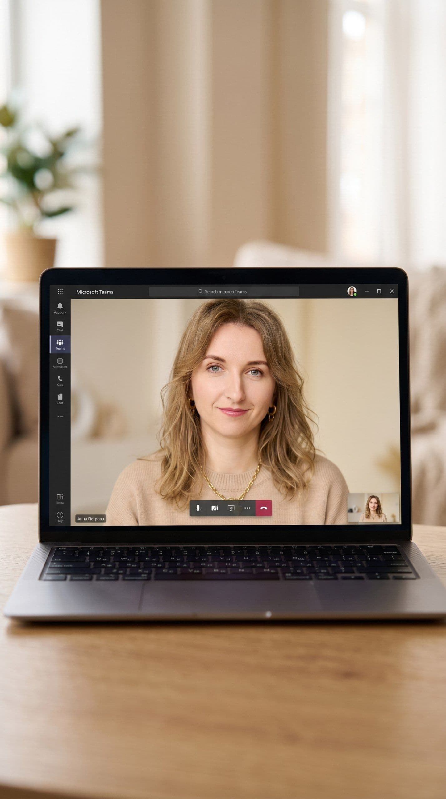
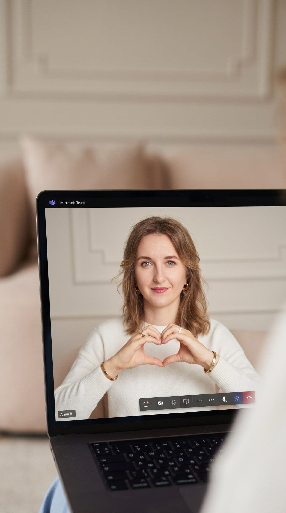

Вы пережили развод или болезненный разрыв?
Чувствуете боль предательства, обиду, которая не отпускает и ощущение, что внутри всё «заморожено»? А надежда встретить своего человека тает с каждым днем?
Я знаю, как это — чувствовать, что у вас «отобрали» всю жизнь.
Хорошая новость: чтобы «прийти в себя», не нужны годы. Я помогаю освободиться от боли прошлого и вернуть себе целостность через глубинные методы травмотерапии без многолетних копаний в детстве.
В чем особенность моего подхода?
Мой подход — это глубинная терапия, а не бесконечные разговоры о том, «кто виноват». Мы работаем с вашей нервной системой здесь и сейчас, чтобы изменить качество вашей жизни, ваших будущих отношений, отпустить прошлое и начать жить дальше. Подробнее о методе вы можете прочитать в этой статье.
Что вы чувствуете на сессии:
Безопасность. Со мной можно говорить о чем угодно, даже матом. Я принимаю вас целиком — со всей вашей злостью, обидой и «тараканами». Здесь нет осуждения.
Телесное присутствие. Мы не только говорим головой. Мы обращаем внимание на то, где «застряла» боль в теле. После встречи вы уходите в ресурсном состоянии.
Прозрачность. Я не держу клиентов годами. Моя задача — запустить саморегуляцию вашей психики и дать инструменты, чтобы вы сами стали для себя опорой.
Безопасность. Со мной можно говорить о чем угодно, даже матом. Я принимаю вас целиком — со всей вашей злостью, обидой и «тараканами». Здесь нет осуждения.
Телесное присутствие. Мы не только говорим головой. Мы обращаем внимание на то, где «застряла» боль в теле. После встречи вы уходите в ресурсном состоянии.
Прозрачность. Я не держу клиентов годами. Моя задача — запустить саморегуляцию вашей психики и дать инструменты, чтобы вы сами стали для себя опорой.

С какими вопросами я работаю?
БОЛЬНО
Вы все еще чувствуете физический комок в горле или тяжесть в груди при воспоминании о бывшем. Ревность и обида не отпускают, даже если отношений уже нет.
Выход: Мы работаем не с поведением, а с эмоциональной травмой. Вы проживаете эти чувства в безопасной среде, чтобы тело разжало «хватку» прошлого. Боль уходит за 4–6 сессий, не растягиваясь на годы.
Выход: Мы работаем не с поведением, а с эмоциональной травмой. Вы проживаете эти чувства в безопасной среде, чтобы тело разжало «хватку» прошлого. Боль уходит за 4–6 сессий, не растягиваясь на годы.
НЕТ ОПОРЫ
Кажется, что вы «висите в воздухе». Нет уверенности в завтрашнем дне, страшно принимать решения, финансовая нестабильность пугает, а сил нет даже на обычные дела.
Выход: Мы возвращаем вашу энергию. Создаем внутренние опоры, которые позволяют строить жизнь по своим правилам и чувствовать свою силу и уверенность (включая финансовую), даже если вы сейчас одиноки.
Выход: Мы возвращаем вашу энергию. Создаем внутренние опоры, которые позволяют строить жизнь по своим правилам и чувствовать свою силу и уверенность (включая финансовую), даже если вы сейчас одиноки.
СТРАХ НОВЫХ ОТНОШЕНИЙ
Вы мечтаете о любви, но как только появляется интересный человек, внутри включается тревога: «Все равно бросит / сделает больно». Сердце закрыто.
Выход: Глубинные изменения на уровне ваших нейронных цепочек. Вы перестаете выбирать тех, кто причиняет боль, и открываетесь для партнера, который способен на заботу.
Выход: Глубинные изменения на уровне ваших нейронных цепочек. Вы перестаете выбирать тех, кто причиняет боль, и открываетесь для партнера, который способен на заботу.
Обо мне
Я — Марина Андреева — практикующий психолог, травмотерапевт для одиноких женщин и мужчин, которые хотят любить и быть любимыми, но потеряли надежду встретить своего человека.
💜 Свободу от боли, обид и тревоги (уже с 4-й сессии).
💜 Уверенность, что ваша жизнь и состояние — в ваших руках.
💜 Способность выбирать надежных партнеров и строить здоровые отношения.
За моими плечами не только дипломы и успешные кейсы. Я сама прошла путь от болезненного развода и потери себя — к счастливой, наполненной жизни. Я знаю вашу боль изнутри и знаю, как с ней справиться.
Вместо бесконечных страданий вы получите:
💜 Свободу от боли, обид и тревоги (уже с 4-й сессии).
💜 Уверенность, что ваша жизнь и состояние — в ваших руках.
💜 Способность выбирать надежных партнеров и строить здоровые отношения.

Марина Андреева
Психолог, травмотерапевт, трансформационный коуч ICF
Как записаться

1
Запишитесь на бесплатную диагностику через форму на сайте
Вы расскажете, что привело вас ко мне, а я покажу, как работаю
2
Мы выбираем время
Если после общения вы поймете, что готовы работать именно со мной
3
Я присылаю ссылку на оплату через сайт
Это безопасно: после оплаты сессии вы получаете чек, и она становится зарезервированной за вами.
4
Мы встречаемся
Как вам комфортнее: по видеосвязи (онлайн) или лично в кабинете
5
Работаем с вашим запросом
Глубинно, с телом, с чувствами, в полной безопасности для вас
Стоимость
Онлайн и офлайн — это единая по сути глубинная работа: меняется только формат встреч и место, а результаты одинаковые.

Онлайн-терапия (60 минут)
Видеосессия по Teams из любой точки мира.
Глубоко работаем с тем, что «застряло» в теле после развода/расставания.
Кому подходит: тем, кому нужен глубинный эффект за 4-6 встреч.
Глубоко работаем с тем, что «застряло» в теле после развода/расставания.
Результат: уходит острота боли, снижается зацикленность на прошлом, возвращается опора на себя.
Кому подходит: тем, кому нужен глубинный эффект за 4-6 встреч.
4500 ₽

Офлайн-терапия (60 минут)
Встречи в кабинете в центре Екатеринбурга.
Та же глубинная работа с состояниями внутри, через тело и нервную систему.
Та же глубинная работа с состояниями внутри, через тело и нервную систему.
Результат: легче отпускать обиду/злость/вину, появляется ясность и спокойствие.
Кому подходит: тем, кому нужна глубинная работа на 4-6 встреч, в личном контакте с терапевтом и отдельное пространство вне дома.
5000 ₽

Разовая онлайн-консультация (90 минут)
Одна сфокусированная сессия под конкретный запрос (чувство/ситуация/воспоминание). Помогаю «разжать» то, что держит и тригерит.
Результат: боль становится менее острой, появляется понятный способ поддержать себя.
Кому подходит: когда нужна помощь «здесь и сейчас» или хочется попробовать формат без курса терапии.
Результат: боль становится менее острой, появляется понятный способ поддержать себя.
Кому подходит: когда нужна помощь «здесь и сейчас» или хочется попробовать формат без курса терапии.
6000 ₽

Долгосрочная терапия (8 онлайн-сессий)
Пакет со скидкой 15% и ясной договоренностью на работу в длительном формате.
Регулярные встречи, чтобы изменить повторяющиеся сценарии.
Результат: уходит страх «снова будет больно», меняется внутренний выбор в отношениях, старые паттерны возвращаются реже.
Результат: уходит страх «снова будет больно», меняется внутренний выбор в отношениях, старые паттерны возвращаются реже.
Кому подходит: если отношения снова и снова повторяют одну и ту же историю.
32400 ₽
Обо мне

Диплом о психологическом образовании
8+ лет работы с людьми, как психолог и коуч ICF
200+ часов личной терапии и супервизий
Вопросы и ответы
Чем отличается онлайн-терапия и очная?
Я не рекомендую один формат вместо другого. Я предлагаю вам прислушаться к себе.
Спросите себя:
— Мне важно физическое присутствие терапевта в одном пространстве или комфортнее сейчас не выходить из дома?
— Я хочу отдельное «место для терапии» или я ценю время и не хочу тратить час на дорогу?
Если сомневаетесь — можно начать онлайн, а потом прийти в кабинет, или наоборот. Формат можно менять.
Спросите себя:
— Мне важно физическое присутствие терапевта в одном пространстве или комфортнее сейчас не выходить из дома?
— Я хочу отдельное «место для терапии» или я ценю время и не хочу тратить час на дорогу?
Оба формата работают. Оба позволяют идти глубоко.
Если сомневаетесь — можно начать онлайн, а потом прийти в кабинет, или наоборот. Формат можно менять.
Сколько нужно времени?
Это зависит от вашего запроса и глубины.
Острую боль после развода или расставания можно снять за 4–6 сессий. Чтобы изменить повторяющиеся сценарии в отношениях и обрести устойчивую опору на себя — нужно больше времени, от 10 сессий и дольше.
Острую боль после развода или расставания можно снять за 4–6 сессий. Чтобы изменить повторяющиеся сценарии в отношениях и обрести устойчивую опору на себя — нужно больше времени, от 10 сессий и дольше.
Вы даете советы?
Нет, это не консультация, где я рассказываю, «как правильно». Это терапевтическая работа.
Я задаю вопросы и предлагаю упражнения, которые помогают вам найти доступ к собственным чувствам и стабилизировать нервную систему. Когда напряжение уходит, приходят ваши собственные ответы и ясность, что делать дальше.
Я задаю вопросы и предлагаю упражнения, которые помогают вам найти доступ к собственным чувствам и стабилизировать нервную систему. Когда напряжение уходит, приходят ваши собственные ответы и ясность, что делать дальше.
Как оплатить?
Оплата услуг происходит через форму банка на этом сайте. Вы можете оплатить картой или через приложение вашего банка.
Вы даете чеки?
Да. Я работаю как ИП, после оплаты через сайт вам автоматически на почту приходит чек от банка.